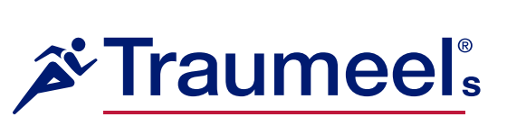
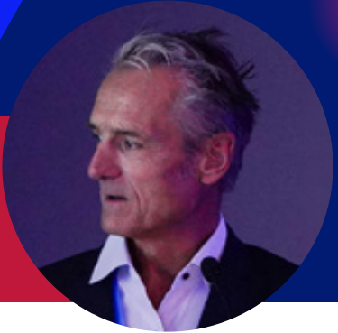
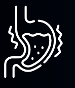
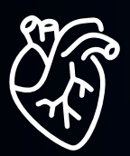
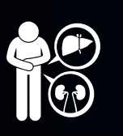
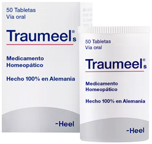
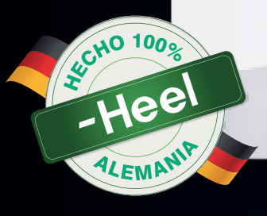
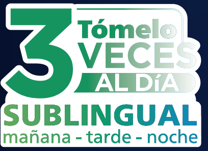
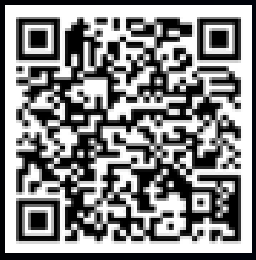

TRAUMED · DOLOR CON MOVIMIENTO
≈1día antes
Con Tr14 frente a placebo o diclofenac.³

FEDERACIÓN INTERNACIONAL01/ 05EL ABORDAJE
Traumeel® y el abordaje del esguince lateral de tobillo: de la inflamación a la resolución dentro del concepto de soft tissue engineering.

Manejo localEdema e inflamación
RehabilitaciónCarga según tolerancia
FunciónEntrenamiento motor y propioceptivo
02/ 05EL ESTUDIO TRAUMED
Ensayo prospectivo, multicéntrico, doble ciego y aleatorizado. Tr14 gel frente a diclofenac y placebo.³
Dolor durante el movimiento pasivo, evaluado mediante escala visual analógica (EVA).
Puntajes de dolor presentados por el disertante.³
03/ 05TIEMPO HASTA LA MEJORÍA
Tiempo hasta alcanzar al menos un 50% de reducción del dolor. Resultados destacados en la conferencia.
TRAUMED · DOLOR CON MOVIMIENTO
Con Tr14 frente a placebo o diclofenac.³
TRAUMED · DOLOR EN REPOSO
A favor de Tr14, según lo presentado.³
04/ 05LA EVIDENCIA EN CONTEXTO
El metanálisis de datos individuales integró TAASS y TRAUMED en esguince lateral de tobillo grado I–II.⁴
2013
2024
2026
DIFERENCIAS A FAVOR DE Tr14 EN EL METANÁLISIS
05/ 05CONCLUSIONES
El esguince lateral de tobillo requiere un abordaje individualizado; la recuperación no se limita al alivio del dolor.
El soft tissue engineering integra tratamiento local, rehabilitación, carga según tolerancia y entrenamiento motor y propioceptivo.
La conferencia diferencia bloqueo de la inflamación de apoyo a su resolución y presenta a Tr14 dentro de una estrategia pro-resolutiva.¹
TAASS y TRAUMED constituyen la base clínica presentada; TRAUMED incluyó 625 pacientes y evaluó dolor, función, tiempo hasta 50% de mejoría y seguridad.¹˒²
El metanálisis de TAASS + TRAUMED mostró resultados en la misma dirección y diferencias a favor de Tr14 frente a diclofenac en días 4, 7 y 14; el disertante propone integrarlo como un “team player” dentro del abordaje global.⁴
SIN LOS EFECTOS SECUNDARIOS
DE LOS TRATAMIENTOS CONVENCIONALES:5

NO produce gastritis

NO aumenta
riesgo cardiovascular

NO afecta el hígado
ni el riñon




Consulte aquí referencias bibliográficas,
contraindicaciones y advertencias
*Material exclusivo para el cuerpo médico. Prohibida su reproducción divulgación como pieza publicitaria al público.